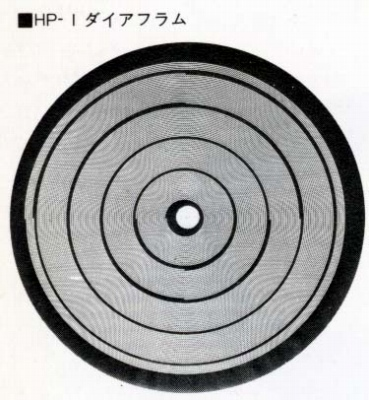
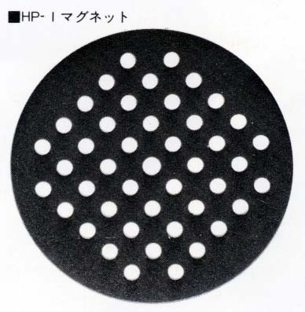
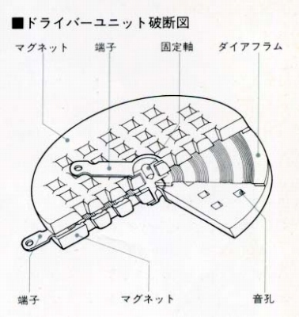
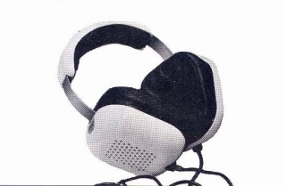
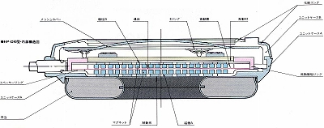
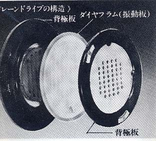
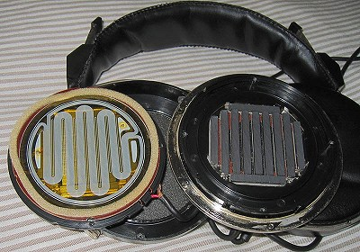

オルソダイナミック型
ヤマハが自社の「動電型全面駆動方式」のヘッドフォンにつけた名称。
  
「動電型全面駆動方式」の基本的な動作原理は下記を参照。
「動電型全面駆動方式」を最初に取り入れたヘッドフォンは1972年に英国のスピーカーメーカー、ワーフデール(WHARFEDALE）社といわれている。
（ワーフデールのアイソダイナミック）

動作原理自体はそれ以前から知られていたが、ダイアフラム（振動膜）の薄膜化・ダイアフラムとコイルを一体化する為の技術が熟成するのに時間がかかった為、なかなか製品化されなかったらしい。
また江川三郎氏の記事によると1975年頃、この関連の国内特許の期限が切れた為、各社がこぞって製品化したされる。製品化した主なメーカーはオーディオテクニカ、日本コロンビア、エレガ、フォステクス、トリオ（現 ケンウッド）、ビクターなど。海外メーカーではドイツのピアレス社が製造し、B&Oの「U-70」もオルソダイナミック型といわれる。
他社では「フラットダイナミック型」、「フラットドライブ」、「プレーンドライブ」、「ダイナフラット型」等、呼んでいた。
（ビクター HP-D90構造図）

（トリオ プレーンドライブ構造写真）

（フォステクス T50 ダイアフラム及びマグネット）
